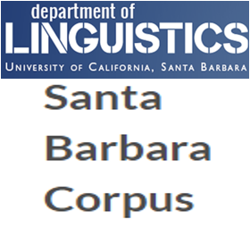
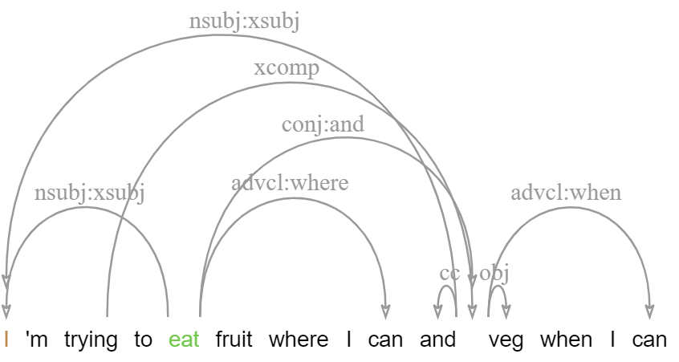
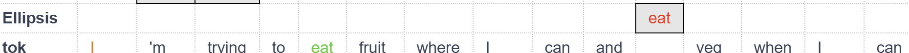

GUM7 – four added genres, Wikification and more!

The first release of GUM series 7 now adds four more genres to our multilayer corpus, in addition to brand new annotation layers, corrections, and more. This post outlines the main changes and additions to the corpus.
What is GUM?
GUM is an open source multilayer corpus of richly annotated web texts from eight text types. The corpus is collected and expanded by students as part of the curriculum in LING-367 Computational Corpus Linguistics at Georgetown University. The selection of text types is meant to represent different communicative purposes, while coming from sources that are readily and openly available (mostly Creative Commons licenses), so that new texts can be annotated and published with ease.
New data
Every three years we change the genres to expand in the next edition of GUM. This year we've started to focus more on spoken materials, and the new genres include face to face converations, political speeches, open access textbooks and YouTube vlogs. This is how the data currently breaks down:
| Text type | Source | Documents | Tokens | |
|---|---|---|---|---|
| Interviews | Wikinews | 19 | 18,037 | |
| News stories | Wikinews | 21 | 14,094 | |
| Travel guides | Wikivoyage | 17 | 14,955 | |
| How-to guides | wikiHow | 19 | 16,920 | |
| Academic writing | Various | 16 | 15,110 | |
| Biographies | Wikipedia | 20 | 17,951 | |
| Fiction | Various | 18 | 16,307 | |
| Forum discussions | 18 | 16,286 | ||
| Conversations | UCSB Corpus |  | 5 | 5,698 |
| Political speeches | Various | 5 | 4,831 | |
| CC Vlogs | YouTube | 5 | 5,180 | |
| Textbooks | OpenStax | 5 | 5,376 | |
| Total | 168 | 150,756 |
Wikification
This year we've added a new annotation type, which we've retrofitted our old annotations to include as well: Named Entity Linking, or more specifically Wikification. This adds links to Wikipedia for all named entities that have a corresponding Wikipedia article. Unlike other Wikified datasets, GUM includes not only 'atomic' named spans, where a person's name might be linked to Wikipedia, but thanks to our nested coreference annotations, also all mentions of a wikified entity, including pronominal and common noun cases, as well as mentions within mentions. This means the "she" might be linked to French actress Jeanne Moreau in context, and that mentions like the [United States [Congress]] will include links to both entities' Wikipedia pages. Many thanks to Yi-Ju Lin for working on this project!

Nested Wikification of mentions of Jeanne Moreau, an award she won, and the festival and location where she won it.
Enhanced Universal Dependencies
The new enhanced dependencies layer adds an additional graph representation with structure sharing, which more closely reflects semantic argument structure (see the guidelines). This layer is produced semi-automatically by propagating structure sharing across coordination, subject and object control and more, and is then adjusted including the introduction of 'virtual' tokens to cover ellipsis, gapping, right-node-raising and related phenomena. This layer also provides augmented label types including lexical subtypes, such as obl:on to indicate an oblique PP modifier headed by 'on', or conj:or to indicate a disjunction marked by 'or'.
 Totally reworked date/time annotations
Following work by Nitin Venkateswaran, the new release has much more extensive date/time annotations, including normalization for seasons and parts of the day (e.g. annotating any 'summer' as not before beginning of June, and not after end of August, etc.). The new data follows practices in other time annotated corpora more closely, and will be used to evaluate day/time prediction accuracy for automated datasets, such as our Amalgum corpus.
New SOTA neural constituent parsing and function labels
Constituent trees in GUM are automatically parsed, except for a small subset of manually annotated test documents, using high accuracy parsing from gold POS tags. Recent advances in parsing have meant that we can now get even more accurate parses, which are now produced by the state of the art neural parser from Mrini et al. (adapted to the GUM build bot by Nitin Venkateswaran).
Another addition in this version is the incorporation of consituent function labels following the original Penn Treebank phrase function labels, such as NP-SBJ for subject NPs, subtypes of adverbials and PPs (ADVP-TMP, ADVP-MNR, PP-LOC, PP-DIR etc.). The GUM build bot now projects function labels onto the constituent trees, which are searchable in ANNIS as shown below.
Constituent trees enriched with functional labels, such as SBJ, NOM, DIR.
Better consistency and new morphology
Since GUM6, we have been working on better convergence with existing standards, including revising RST segmentation to match the RST Discourse Treebank exactly, as well as convergence in POS tagging and dependency parsing with OntoNotes and the English Web Treebank.
As part of our efforts to match UD annotation conventions, we have completely reimplemented our morphological tagging pipeline, which now outputs all features expected by Universal Dependencies, including propagation of person, number and case information, including on unmarked verb forms (VBD, VBP), which now indicate the subject person and number.
Morphological annotations following the UD standard.
Separate annotation of split antecedents
GUM7 now better separates split antecedent anaphora, illustrated below, with a special information status value split, as well as a dedicated edge type.
Goodehas been in a relationship withSophie Dymokesince 2005.Theymarried in 2014.(They split-refers to → Goode, Sophie Symoke)